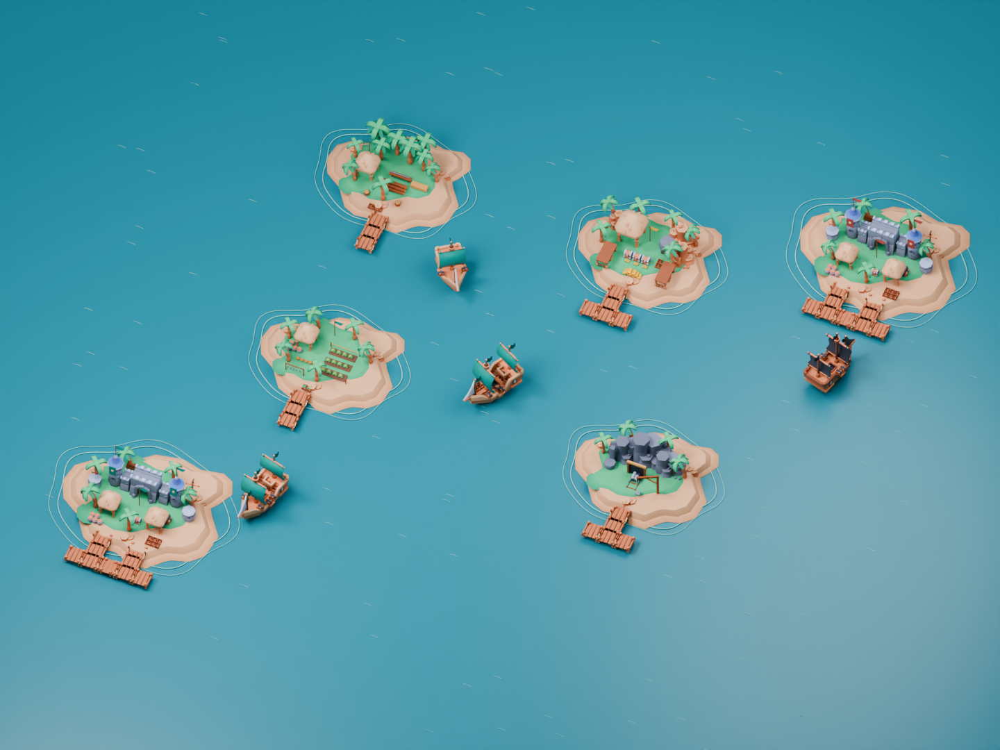

View full resolution ↗The world
An archipelago worth fighting for.
Four resource islands, two opposing harbors, and a fleet built around the warm wood, chunky shapes, and tropical palette of the supplied kit.
Use the left and right arrow keys to browse.